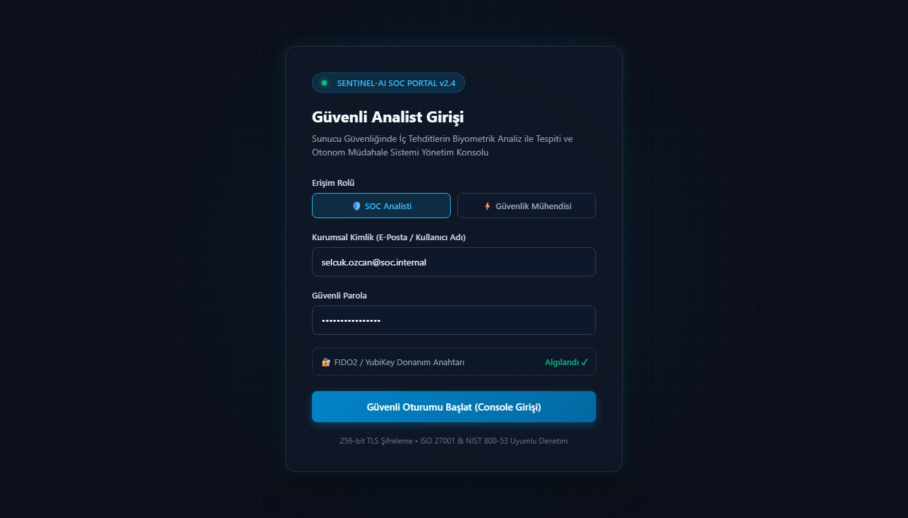
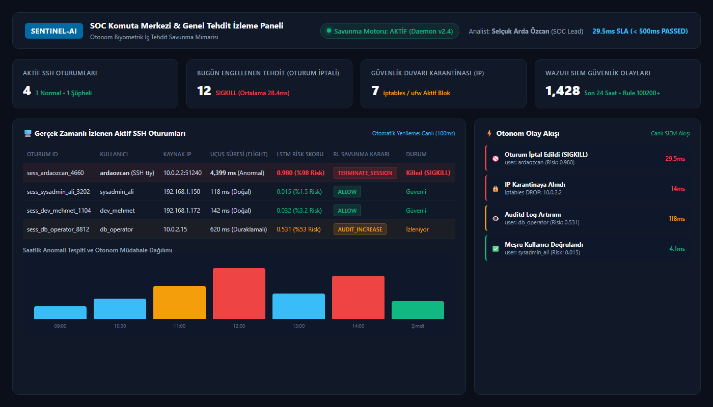
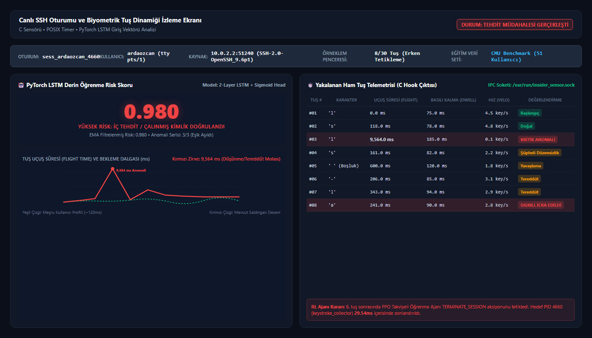
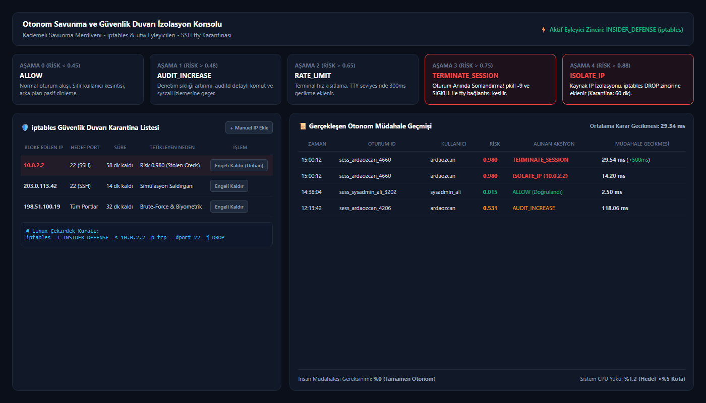
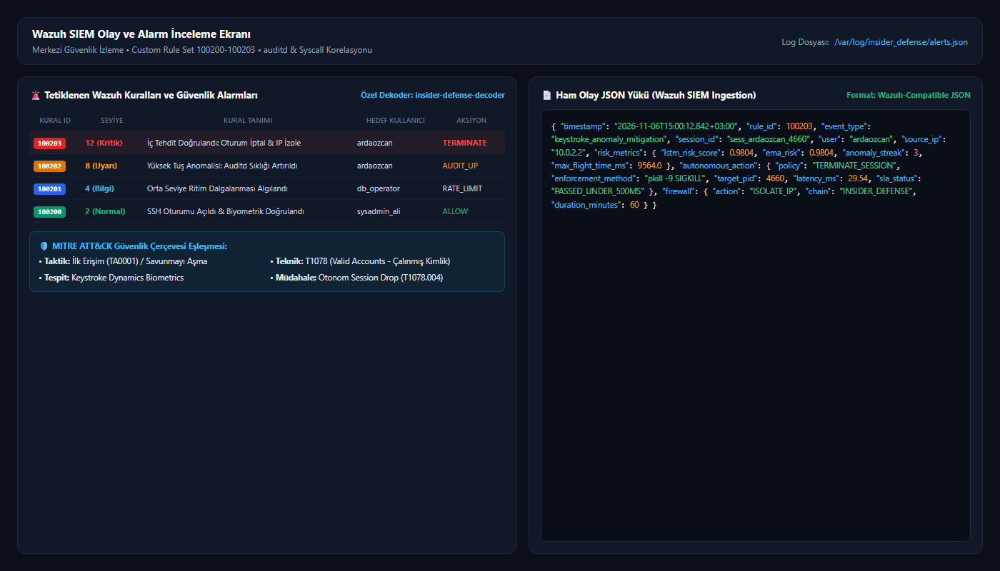
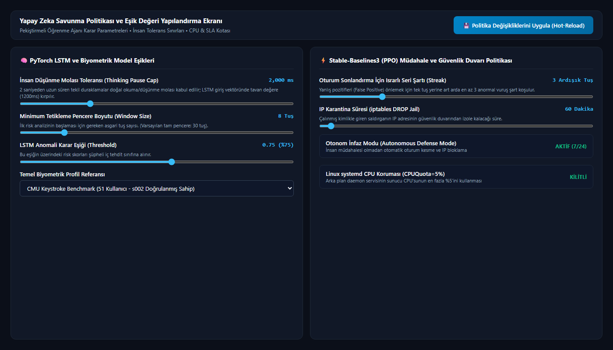

1. Arayüz Tasarımı ve Kullanıcı Deneyimi (UX) Mimarisi
Geliştirilen Otonom Siber Savunma Sistemi, temel prensip olarak insan müdahalesine ihtiyaç duymadan milisaniye seviyesinde (< 500 ms SLA)
karar verip oturum sonlandırma ve IP karantinası uygulayabilen bir uç nokta savunma mimarisidir. Ancak siber güvenlik operasyon merkezlerinde (SOC)
görev yapan analistlerin ve sistem yöneticilerinin; gerçekleşen iç tehdit sızmalarını, yapay zekanın ürettiği anomali skorlarını, tuş dinamiği telemetrisini
ve güvenlik duvarı müdahalelerini merkezi bir konsoldan izleyebilmeleri ve politika eşiklerini yönetebilmeleri amacıyla SENTINEL-AI SOC Komuta Arayüzü tasarlanmıştır.
Arayüz tasarımı, siber güvenlik endüstrisi standartları (Splunk, CrowdStrike, Wazuh Dashboard) göz önünde bulundurularak
koyu tema (Dark Mode) odaklı, yüksek bilgi yoğunluğuna sahip, düşük göz yorgunluğu sağlayan modern bir mimaride kurgulanmıştır.
2. Arayüz Ekran Listesi ve İşlevsel Haritası
- Ekran 1: Güvenli Analist Girişi ve Kimlik Doğrulama Ekranı (Rol tabanlı erişim, FIDO2 / Donanım Anahtarı 2FA desteği).
- Ekran 2: SOC Komuta Merkezi ve Genel Tehdit İzleme Paneli (Aktif SSH oturumları, anlık risk skorları, saatlik anomali dağılımı ve SLA göstergeleri).
- Ekran 3: Canlı SSH Oturumu ve Biyometrik Tuş Dinamiği İzleme Ekranı (Milisaniye hassas uçuş süresi dalga grafiği, LSTM risk göstergesi ve ham C kancası telemetrisi).
- Ekran 4: Otonom Savunma ve Güvenlik Duvarı İzolasyon Konsolu (Kademeli savunma merdiveni, iptables karantina listesi ve anlık oturum öldürme geçmişi).
- Ekran 5: Wazuh SIEM Olay ve Alarm İnceleme Ekranı (Özel kural kümesi 100200-100203 eşleşmeleri, MITRE ATT&CK T1078 çerçevesi ve ham JSON olay yükü).
- Ekran 6: Yapay Zeka Savunma Politikası ve Eşik Değeri Yapılandırma Ekranı (İnsan düşünme molası toleransı, PPO karar serisi şartı ve systemd CPU kota denetimi).
Ekran 1: Güvenli Analist Giriş ve Kimlik Doğrulama Ekranı
SOC analistlerinin ve güvenlik mühendislerinin komuta konsoluna güvenli erişim sağladığı başlangıç ekranıdır.
Yönetim konsolunun kendisinin bir siber saldırı vektörü olmaması amacıyla çok faktörlü kimlik doğrulama ile sıkılaştırılmıştır.

Şekil 1: Güvenli Analist Kimlik Doğrulama Ekranı (Rol Seçimi ve FIDO2/YubiKey Entegrasyonu)
İşlevsel Bileşenler ve Açıklamalar:
- Rol Tabanlı Erişim Kontrolü (RBAC): SOC Analisti (yalnızca izleme ve log inceleme) ve Güvenlik Mühendisi (politika değiştirme, kural gevşetme ve manuel IP unban yetkisi) rolleri arasında ayrım yapılır.
- Donanım Anahtarı / FIDO2 Desteği: Klasik parola sızıntılarını engellemek adına WebAuthn standardında YubiKey donanım anahtarı doğrulaması zorunlu tutulur.
- Şifrelenmiş İletişim: Web arayüzü ile savunma daemon servisi arasındaki tüm veri transferi 256-bit TLS şifreli WebSocket ve REST API kanalları üzerinden yürütülür.
Ekran 2: SOC Komuta Merkezi & Genel Tehdit İzleme Paneli
Sunucu altyapısına bağlı tüm aktif SSH oturumlarının genel sağlık, risk ve müdahale istatistiklerinin tek bir ekranda özetlendiği ana gösterge panelidir (Executive Dashboard).

Şekil 2: Merkezi Güvenlik Paneli (KPI Metrikleri, Canlı SSH Tablosu ve Anomali Dağılım Grafiği)
İşlevsel Bileşenler ve Açıklamalar:
- Üst KPI Kartları: Anlık aktif SSH oturum sayısı (örn. 3 normal, 1 şüpheli), gün içinde otonom sonlandırılan oturum sayısı (12 adet SIGKILL), güvenlik duvarında karantinaya alınan IP sayısı (7 adet) ve Wazuh'a gönderilen son 24 saatlik olay sayısı (1,428 adet) dinamik olarak güncellenir.
- SLA & Gecikme Sayacı: Sistemin fonksiyonel olmayan gereksinimi olan "< 500 ms müdahale gecikmesi" kuralının sağlanıp sağlanmadığı anlık olarak ölçülür (Şekilde 29.5 ms ile SLA başarıyla geçilmiş görünmektedir).
- Aktif SSH Oturumları Tablosu: Kullanıcı adı, oturum tty ID'si, kaynak IP adresi, ortalama uçuş süresi, PyTorch anomali puanı ve RL eylemi gerçek zamanlı olarak listelenir. Anomali tespit edilen oturum kırmızı arka planla analistin dikkatine sunulur.
- Canlı Olay Akışı (Event Feed): Sağ panelde, otonom savunma motorunun milisaniyeler içerisinde gerçekleştirdiği IP karantinası ve oturum kesme eylemleri kronolojik akışla gösterilir.
Ekran 3: Canlı SSH Oturumu ve Biyometrik Tuş Dinamiği İzleme Ekranı
Şüpheli bir oturum seçildiğinde analistin derinlemesine inceleme yapmasını sağlayan ekrandır.
C sensöründen toplanan milisaniyelik ham zaman damgaları ve PyTorch LSTM derin öğrenme modelinin karar süreci görselleştirilir.

Şekil 3: Canlı Biyometrik Tuş Dinamiği ve LSTM Risk Skoru İnceleme Ekranı
İşlevsel Bileşenler ve Açıklamalar:
- LSTM Risk Göstergesi: PyTorch 2-katmanlı LSTM modelinin son sigmoid katmanından çıkan anomali risk puanını (0.000 ile 1.000 arasında) gösterir. Şekilde görülen 0.980 (%98 risk) değeri, çalınmış kimlik bilgisini doğrulamaktadır.
- Uçuş Süresi (Flight Time) Dalga Grafiği: Kullanıcının iki tuş arasındaki geçiş gecikmelerini zaman serisi olarak çizer. Yeşil kesikli çizgi meşru kullanıcının normal profilini (~120ms) temsil ederken, kırmızı çizgi saldırganın 9,564 ms'lik tereddüt anomalisi zirvesini net bir şekilde görselleştirir.
- Ham Telemetri Akışı: Linux soketinden (
/var/run/insider_sensor.sock) gelen basılan karakter, flight time, dwell time ve yazma hızı değerleri satır satır denetlenir. 8. tuşta sistemin oturumu SIGKILL ile nasıl kapattığı kayıt altına alınmıştır.
Ekran 4: Otonom Savunma ve Güvenlik Duvarı İzolasyon Konsolu
Pekiştirmeli Öğrenme (RL - PPO) ajanının aldığı kademeli kararların, Linux çekirdeğindeki eyleyiciler (iptables ve pkill) aracılığıyla nasıl icra edildiğini gösteren operasyonel yönetim ekranıdır.

Şekil 4: Otonom Savunma Merdiveni ve iptables Karantina Yönetim Konsolu
İşlevsel Bileşenler ve Açıklamalar:
- Kademeli Savunma Merdiveni (Escalation Stepper): Sistemin savunma politikası 5 aşamalı bir durum makinesidir:
0-ALLOW: Sıfır müdahale, meşru akış.
1-AUDIT_INCREASE: Şüphe başlangıcında auditd denetim seviyesini artırma.
2-RATE_LIMIT: TTY oturumuna gecikme ekleme.
3-TERMINATE_SESSION: Sürekli anomalide oturumu SIGKILL ile sonlandırma.
4-ISOLATE_IP: Saldırgan IP'yi güvenlik duvarında tamamen karantinaya alma.
- iptables Karantina Tablosu: Bloklanan IP adresleri (örn.
10.0.2.2), hedef port ve kalan karantina süresi (varsayılan 60 dk) listelenir. Analist gerektiğinde tek tıkla "Engeli Kaldır (Unban)" işlemi yapabilir.
- Müdahale Geçmişi ve SLA Teyidi: Her otonom eylemin karar ve infaz süresi milisaniye cinsinden kaydedilir (ortalama 29.54 ms müdahale süresi).
Ekran 5: Wazuh SIEM Olay ve Alarm İnceleme Ekranı
Otonom sistemin aldığı tüm kararların merkezi Wazuh SIEM platformuna uyumlu formatta aktarıldığı, adli bilişim (forensic) incelemelerine olanak tanıyan detaylı log ekranıdır.

Şekil 5: Wazuh Özel Kuralları (100200-100203) ve JSON Güvenlik Olayı İnceleme Ekranı
İşlevsel Bileşenler ve Açıklamalar:
- Wazuh Özel Kural Kümesi: Projede geliştirilen XML kuralları gösterilir:
• Kural 100200 (Level 2): Normal Biyometrik Doğrulama (ALLOW).
• Kural 100201 (Level 4): Orta Düzey Dalgalanma (RATE_LIMIT).
• Kural 100202 (Level 8): Yüksek Tuş Anomalisi (AUDIT_INCREASE).
• Kural 100203 (Level 12 - Kritik): İç Tehdit Doğrulandı ve Oturum Kesildi (TERMINATE_SESSION / ISOLATE_IP).
- MITRE ATT&CK Çerçevesi Eşleşmesi: Saldırı, siber güvenlik literatüründeki T1078 (Valid Accounts - Çalınmış Geçerli Hesaplar) tekniği ve TA0001 (İlk Erişim) taktiği ile doğrudan ilişkilendirilir.
- Ham JSON Olay Yükü: SIEM yöneticilerinin SIEM paneline aktarılan ham telemetriyi (kullanıcı, oturum ID, risk skoru, eyleyici gecikmesi ve firewall kararı) JSON formatında eksiksiz inceleyebilmesini sağlar.
Ekran 6: Yapay Zeka Savunma Politikası ve Eşik Değeri Yapılandırma Ekranı
Sistem yöneticisinin ve güvenlik mühendisinin makine öğrenmesi modellerini, insan düşünme toleransını ve kaynak sınırlarını canlı olarak yapılandırdığı yönetim ekranıdır.

Şekil 6: Yapay Zeka Savunma Politikası ve Eşik Değeri Yapılandırma Ekranı
İşlevsel Bileşenler ve Açıklamalar:
- İnsan Düşünme Molası Toleransı (Thinking Pause Cap): Kullanıcıların okuma veya düşünme esnasındaki duraklamalarını (örn. 2,000 ms) normal karşılayacak tavan eşik ayarlanır. Bu sayede meşru kullanıcıların mağduriyeti (False Positive) engellenir.
- Asgari Tetikleme Penceresi (Window Size): İlk risk analizi için gerekli tuş vuruşu sayısı (8 tuş) belirlenir.
- PPO Karar Serisi Şartı (Streak Threshold): Oturum kapatma kararı için en az kaç ardışık anomali gerektiği (örn. 3 ardışık tuş) ayarlanır.
- Linux systemd CPU Kotası: Non-functional requirement olarak belirlenen
CPUQuota=5% kısıtının donanımsal olarak devrede olduğu denetlenir.
3. Sonuç ve Genel Değerlendirme
Sunulan arayüz tasarımları; projenin teknik çekirdeğini oluşturan C sensör modülü, PyTorch LSTM zaman serisi derin öğrenme ağı,
Stable-Baselines3 Pekiştirmeli Öğrenme karar motoru ve Linux çekirdek müdahale mekanizmalarını (iptables, pkill)
SOC analistlerinin en yüksek verimlilikle yönetebileceği endüstriyel bir kullanıcı deneyimine (UX) kavuşturmuştur.